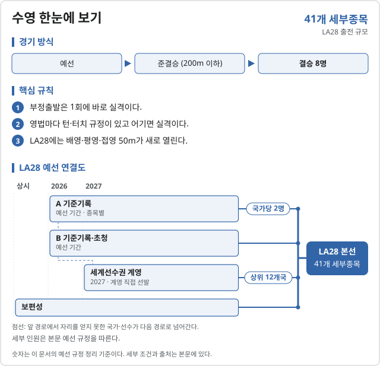

수영 (Swimming)
2028 LA 올림픽 수영에는 41개 세부종목이 있다.
- 남자 자유형 50m · 자유형 100m · 자유형 200m · 자유형 400m · 자유형 800m · 자유형 1500m · 배영 50m · 배영 100m · 배영 200m · 평영 50m · 평영 100m · 평영 200m · 접영 50m · 접영 100m · 접영 200m · 개인혼영 200m · 개인혼영 400m · 4×100m 자유형 계주 · 4×200m 자유형 계주 · 4×100m 혼계영
- 여자 자유형 50m · 자유형 100m · 자유형 200m · 자유형 400m · 자유형 800m · 자유형 1500m · 배영 50m · 배영 100m · 배영 200m · 평영 50m · 평영 100m · 평영 200m · 접영 50m · 접영 100m · 접영 200m · 개인혼영 200m · 개인혼영 400m · 4×100m 자유형 계주 · 4×200m 자유형 계주 · 4×100m 혼계영
- 혼성 4×100m 혼계영

예선 규정
올림픽 예선
일반 개인종목은 A·B 기준기록, 신설 배영·평영·접영 50m는 2027 월드컵 경로, 계영은 2027 부다페스트 세계선수권 경로를 살펴봐야 한다. 계영 7개 종목은 상위 12개국의 직접 선발과 전체 쿼터 안에 있는 선수들로 구성하는 추가 팀 경로를 구분한다. World Aquatics 공식 설명
예선 일정
| 기간 | 대회 | 장소 | 배정 쿼터 | 결과 |
|---|
직전 올림픽 메달리스트
2024 파리 올림픽
| 세부종목 | 금 | 은 | 동 |
|---|---|---|---|
| 남자 자유형 50m | Cameron McEvoy (AUS) | Ben Proud (GBR) | Florent Manaudou (FRA) |
| 남자 자유형 100m | Pan Zhanle (CHN) | Kyle Chalmers (AUS) | David Popovici (ROU) |
| 남자 자유형 200m | David Popovici (ROU) | Matthew Richards (GBR) | Luke Hobson (USA) |
| 남자 자유형 400m | Lukas Märtens (GER) | Elijah Winnington (AUS) | 김우민 (KOR) |
| 남자 자유형 800m | Daniel Wiffen (IRL) | Bobby Finke (USA) | Gregorio Paltrinieri (ITA) |
| 남자 자유형 1500m | Bobby Finke (USA) | Gregorio Paltrinieri (ITA) | Daniel Wiffen (IRL) |
| 남자 배영 50m | 신설 | ||
| 남자 배영 100m | Thomas Ceccon (ITA) | Xu Jiayu (CHN) | Ryan Murphy (USA) |
| 남자 배영 200m | Hubert Kós (HUN) | Apostolos Christou (GRE) | Roman Mityukov (SUI) |
| 남자 평영 50m | 신설 | ||
| 남자 평영 100m | Nicolò Martinenghi (ITA) | Adam Peaty (GBR) / Nic Fink (USA) | — |
| 남자 평영 200m | Léon Marchand (FRA) | Zac Stubblety-Cook (AUS) | Caspar Corbeau (NED) |
| 남자 접영 50m | 신설 | ||
| 남자 접영 100m | Kristóf Milák (HUN) | Josh Liendo (CAN) | Ilya Kharun (CAN) |
| 남자 접영 200m | Léon Marchand (FRA) | Kristóf Milák (HUN) | Ilya Kharun (CAN) |
| 남자 개인혼영 200m | Léon Marchand (FRA) | Duncan Scott (GBR) | Wang Shun (CHN) |
| 남자 개인혼영 400m | Léon Marchand (FRA) | Tomoyuki Matsushita (JPN) | Carson Foster (USA) |
| 남자 4×100m 자유형 계주 | USA | AUS | ITA |
| 남자 4×200m 자유형 계주 | GBR | USA | AUS |
| 남자 4×100m 혼계영 | CHN | USA | FRA |
| 여자 자유형 50m | Sarah Sjöström (SWE) | Meg Harris (AUS) | Zhang Yufei (CHN) |
| 여자 자유형 100m | Sarah Sjöström (SWE) | Torri Huske (USA) | Siobhán Haughey (HKG) |
| 여자 자유형 200m | Mollie O'Callaghan (AUS) | Ariarne Titmus (AUS) | Siobhán Haughey (HKG) |
| 여자 자유형 400m | Ariarne Titmus (AUS) | Summer McIntosh (CAN) | Katie Ledecky (USA) |
| 여자 자유형 800m | Katie Ledecky (USA) | Ariarne Titmus (AUS) | Paige Madden (USA) |
| 여자 자유형 1500m | Katie Ledecky (USA) | Anastasiya Kirpichnikova (FRA) | Isabel Marie Gose (GER) |
| 여자 배영 50m | 신설 | ||
| 여자 배영 100m | Kaylee McKeown (AUS) | Regan Smith (USA) | Katharine Berkoff (USA) |
| 여자 배영 200m | Kaylee McKeown (AUS) | Regan Smith (USA) | Kylie Masse (CAN) |
| 여자 평영 50m | 신설 | ||
| 여자 평영 100m | Tatjana Smith (SAF) | Tang Qianting (CHN) | Mona McSharry (IRL) |
| 여자 평영 200m | Kate Douglass (USA) | Tatjana Smith (SAF) | Tes Schouten (NED) |
| 여자 접영 50m | 신설 | ||
| 여자 접영 100m | Torri Huske (USA) | Gretchen Walsh (USA) | Zhang Yufei (CHN) |
| 여자 접영 200m | Summer McIntosh (CAN) | Regan Smith (USA) | Zhang Yufei (CHN) |
| 여자 개인혼영 200m | Summer McIntosh (CAN) | Kate Douglass (USA) | Kaylee McKeown (AUS) |
| 여자 개인혼영 400m | Summer McIntosh (CAN) | Katie Grimes (USA) | Emma Weyant (USA) |
| 여자 4×100m 자유형 계주 | AUS | USA | CHN |
| 여자 4×200m 자유형 계주 | AUS | USA | CHN |
| 여자 4×100m 혼계영 | USA | AUS | CHN |
| 혼성 4×100m 혼계영 | USA | CHN | AUS |
대한민국
주요 한국기록과 세계선수권
연맹 기록 확인: 2026.10.11 · 50m 수영장| 종목 | 한국기록 · 연맹 게시 | 세계기록 대비 시간 | LA28 A 대비 시간 | 후속 신기록 / 타이기록 | 2025 세계선수권 | 2024 세계선수권 | 2023 세계선수권 |
|---|---|---|---|---|---|---|---|
| 남자 자유형 200m | 1:43.92 황선우 2025-10-20 | 101.88% WR 01:42.00 · +1.92초 | 98.20% A 1:45.83 · -1.91초 | — | ROU POPOVICI 1 1:43.53 USA HOBSON 2 1:43.84 JPN MURASA 3 1:44.54 | KOR HWANG 1 1:44.75 LTU RAPŠYS 2 1:45.05 USA HOBSON 3 1:45.26 | GBR RICHARDS 1 1:44.30 GBR DEAN 2 1:44.32 KOR HWANG 3 1:44.42 |
| 남자 자유형 400m | 3:41.53 박태환 2010-11-16 | 100.71% WR 03:39.96 · +1.57초 | 98.26% A 3:45.46 · -3.93초 | — | GER MÄRTENS 1 3:42.35 AUS SHORT 2 3:42.37 KOR KIM 3 3:42.60 | KOR KIM 1 3:42.71 AUS WINNINGTON 2 3:42.86 GER MÄRTENS 3 3:42.96 | AUS SHORT 1 3:40.68 TUN HAFNAOUI 2 3:40.70 GER MÄRTENS 3 3:42.20 |
| 남자 자유형 800m | 7:46.03 김우민 2023-09-28 | 103.08% WR 07:32.12 · +13.91초 | 99.78% A 7:47.04 · -1.01초 | 김준우 7:43.862026-09-24 · 후속 신기록 보도 | TUN JAOUADI 1 7:36.88 GER SCHWARZ 2 7:39.96 GER MÄRTENS 3 7:40.19 | IRL WIFFEN 1 7:40.94 AUS WINNINGTON 2 7:42.95 ITA PALTRINIERI 3 7:42.98 | TUN HAFNAOUI 1 7:37.00 AUS SHORT 2 7:37.76 USA FINKE 3 7:38.67 |
| 여자 자유형 200m | 1:58.00 조현주 2026-03-27 | 105.14% WR 01:52.23 · +5.77초 | 101.35% A 1:56.43 · +1.57초 | — | AUS O'CALLAGHAN 1 1:53.48 CHN LI 2 1:54.52 USA WEINSTEIN 3 1:54.67 | HKG HAUGHEY 1 1:54.89 NZL FAIRWEATHER 2 1:55.77 AUS THROSSELL 3 1:56.00 | AUS O'CALLAGHAN 1 1:52.85 AUS TITMUS 2 1:53.01 CAN MCINTOSH 3 1:53.65 |
| 여자 평영 200m | 2:22.69 박시은 2026-09-24 | 103.74% WR 02:17.55 · +5.14초 | 99.44% A 2:23.49 · -0.80초 | — | USA DOUGLASS 1 2:18.50 NAB CHIKUNOVA 2 2:19.96 RSA CORBETT 3 2:23.52 RSA ZMUSHKA 3 2:23.52 | NED SCHOUTEN 1 2:19.81 USA DOUGLASS 2 2:20.91 CAN PICKREM 3 2:22.94 | RSA SCHOENMAKER 1 2:20.80 USA DOUGLASS 2 2:21.23 NED SCHOUTEN 3 2:21.63 |
| 남자 자유형 계영 4×200m | 7:01.73 대한민국 2023-09-25 | 100.76% WR 06:58.55 · +3.18초 | 해당 없음 계영은 기준기록 선발 아님 | — | GBR TEAM 1 6:59.84 CHN TEAM 2 7:00.91 AUS TEAM 3 7:00.98 | CHN TEAM 1 7:01.84 KOR TEAM 2 7:01.94 USA TEAM 3 7:02.08 | GBR TEAM 1 6:59.08 USA TEAM 2 7:00.02 AUS TEAM 3 7:02.13 |
| 혼성 혼계영 4×100m | 3:44.12 대한민국 2026-09-23 | 103.42% WR 03:36.70 · +7.42초 | 해당 없음 계영은 기준기록 선발 아님 | — | NAB TEAM 1 3:37.97 CHN TEAM 2 3:39.99 CAN TEAM 3 3:40.90 | USA TEAM 1 3:40.22 AUS TEAM 2 3:43.12 GBR TEAM 3 3:45.09 | CHN TEAM 1 3:38.57 AUS TEAM 2 3:39.03 USA TEAM 3 3:40.19 |
각주
외부 링크
부록: 국내 대회 우승자
국가대표 선발전
대한체육회 종목별 경기운영 정보 시스템(result.sports.or.kr)에 올라온 결과만 옮겼다 (2026-11-27 기준). 종목별 결승 1~3위다. 최종 선발 명단은 연맹 발표로 확인한다.
2026 KB금융 코리아 스위밍 챔피언십(2026 경영 국가대표 선발대회) (2026-03-23 ~ 03-28, 김천실내수영장)
| 종별 | 세부종목 | 1위 | 2위 | 3위 |
|---|---|---|---|---|
| 남자부 | 자유형50m | 김영범 (강원특별자치도청) 22.18 | 양재훈 (강원특별자치도청) 22.21 | 지유찬 (대구광역시청) 22.24 |
| 남자부 | 자유형100m | 김영범 (강원특별자치도청) 48.17 | 황선우 (강원특별자치도청) 48.30 | 이유연 (고양시청) 49.03 |
| 남자부 | 자유형200m | 황선우 (강원특별자치도청) 1:46.22 | 김우민 (강원특별자치도청) 1:46.63 | 이호준 (제주시청) 1:47.33 |
| 남자부 | 자유형400m | 김우민 (강원특별자치도청) 3:46.40 | 유정빈 (경북체육회 수영팀) 3:53.97 | 오세범 (부천시청) 3:58.35 |
| 남자부 | 자유형800m | 김우민 (강원특별자치도청) 7:46.91 | 김준우 (강원특별자치도청) 7:51.46 | 원준 (방산고등학교) 8:08.77 |
| 남자부 | 자유형1500m | 김우민 (강원특별자치도청) 14:54.38 | 김준우 (강원특별자치도청) 15:09.97 | 원준 (방산고등학교) 15:31.64 |
| 남자부 | 배영100m | 이주호 (서귀포시청) 54.10 | 송임규 (화성시청) 54.81 | 윤지환 (강원특별자치도청) 55.10 |
| 남자부 | 배영200m | 이주호 (서귀포시청) 1:57.48 | 이혁 (부산광역시중구청) 1:58.21 | 유기빈 (고양시청) 2:01.27 |
| 남자부 | 평영100m | 최동열 (강원특별자치도청) 1:00.26 | 박찬욱 (충청북도수영연맹) 1:00.62 | 김찬영 (국군체육부대) 1:00.72 |
| 남자부 | 평영200m | 조성재 (국군체육부대) 2:09.79 | 박찬욱 (충청북도수영연맹) 2:11.67 | 이상훈 (강원특별자치도청) 2:13.16 |
| 남자부 | 접영100m | 양재훈 (강원특별자치도청) 51.79 | 김지훈 (대전광역시청) 52.51 | 한주영 (서울시청) 53.15 |
| 남자부 | 접영200m | 박정훈 (대전광역시청) 1:56.35 | 김민섭 (경북체육회 수영팀) 1:56.66 | 황보준헌 (부산광역시중구청) 1:57.16 |
| 남자부 | 개인혼영200m | 김지훈 (대전광역시청) 1:59.85 | 김민석 (전주시청) 2:00.57 | 양석현 (대구광역시청) 2:01.15 |
| 남자부 | 개인혼영400m | 김민석 (전주시청) 4:17.43 | 김민섭 (경북체육회 수영팀) 4:17.85 | 원준 (방산고등학교) 4:20.72 |
| 남자부 | 배영50m | 윤지환 (강원특별자치도청) 24.71 | 이주호 (서귀포시청) 25.40 | 송임규 (화성시청) 25.45 |
| 남자부 | 평영50m | 최동열 (강원특별자치도청) 27.21 | 김찬영 (국군체육부대) 27.45 | 조현재 (서울시청) 28.34 |
| 남자부 | 접영50m | 지유찬 (대구광역시청) 23.57 | 최재석 (대전광역시체육회) 23.60 | 전지훈 (국군체육부대) 23.77 |
| 여자부 | 자유형50m | 허연경 (대전광역시시설관리공단) 25.43 | 허민지 (경북도청) 25.71 | 정소은 (부천시청) 25.78 |
| 여자부 | 자유형100m | 허연경 (대전광역시시설관리공단) 54.96 | 조현주 (경북도청) 55.10 | 정소은 (부천시청) 56.29 |
| 여자부 | 자유형200m | 조현주 (경북도청) 1:58.00 한국신 | 박희경 (안양시청) 2:00.19 | 이원 (서울체육고등학교) 2:02.23 |
| 여자부 | 자유형400m | 한다경 (전라북도체육회) 4:10.42 | 박희경 (안양시청) 4:10.60 | 최정민 (전라북도체육회) 4:19.35 |
| 여자부 | 자유형800m | 한다경 (전라북도체육회) 8:35.62 한국신 | 박희경 (안양시청) 8:44.24 | 김채윤 (대전체육고등학교) 8:50.15 |
| 여자부 | 자유형1500m | 김채윤 (대전체육고등학교) 16:48.84 | 이서연 (서울체육고등학교) 16:50.54 | 황지연 (경남체육고등학교) 17:04.73 |
| 여자부 | 배영100m | 김승원 (경기체육고등학교) 1:00.16 | 이은지 (강원특별자치도체육회) 1:01.01 | 최민서 (안양시청) 1:01.50 |
| 여자부 | 배영200m | 이은지 (강원특별자치도체육회) 2:09.82 | 최민서 (안양시청) 2:10.44 | 김예은 (대전광역시시설관리공단) 2:11.73 |
| 여자부 | 평영100m | 박시은 (강원특별자치도체육회) 1:08.49 | 문수아 (서울체육고등학교) 1:08.79 | 고하루 (강원체육고등학교) 1:09.39 |
| 여자부 | 평영200m | 박시은 (강원특별자치도체육회) 2:25.87 | 문수아 (서울체육고등학교) 2:26.41 | 전다솜 (안양시청) 2:26.64 |
| 여자부 | 접영100m | 안세현 (제주시청) 58.73 | 김도연 (대전체육고등학교) 59.66 | 이송은 (전라북도체육회) 59.93 |
| 여자부 | 접영200m | 김윤희 (안양시청) 2:08.74 | 박수진 (경북도청) 2:09.88 | 이희은 (대전광역시시설관리공단) 2:10.77 |
| 여자부 | 개인혼영200m | 이송은 (전라북도체육회) 2:13.48 | 이희은 (대전광역시시설관리공단) 2:14.10 | 이하윤 (경기체육고등학교) 2:15.44 |
| 여자부 | 개인혼영400m | 이희은 (대전광역시시설관리공단) 4:47.07 | 김보민 (울산수영연맹) 4:48.51 | 박수진 (경북도청) 4:49.91 |
| 여자부 | 배영50m | 김승원 (경기체육고등학교) 28.01 | 이은지 (강원특별자치도체육회) 28.74 | 박한별 (부천시청) 28.78 |
| 여자부 | 평영50m | 박시은 (강원특별자치도체육회) 32.26 | 문수아 (서울체육고등학교) 32.52 | 백수연 (울산광역시체육회) 32.53 |
| 여자부 | 접영50m | 안세현 (제주시청) 26.67 | 이송은 (전라북도체육회) 26.89 | 정소은 (부천시청) 26.90 |
2026년 수영(경영) 국가대표 선발대회 (2025-11-04 ~ 11-09, 김천실내수영장)
| 종별 | 세부종목 | 1위 | 2위 | 3위 |
|---|---|---|---|---|
| 남자부 | 자유형50m | 지유찬 (대구광역시청) 22.15 | 황선우 (강원특별자치도청) 22.34 | 김민준 (강원특별자치도청) 22.79 |
| 남자부 | 자유형100m | 김영범 (강원특별자치도청) 48.34 | 김민준 (강원특별자치도청) 49.77 | 박근호 (강원체육고등학교) 50.10 |
| 남자부 | 자유형200m | 황선우 (강원특별자치도청) 1:47.10 | 이호준 (제주시청) 1:47.87 | 김영현 (전주시청) 1:50.36 |
| 남자부 | 자유형400m | 김준우 (광성고등학교) 3:50.07 | 김영현 (전주시청) 3:52.32 | 김도현 (서울체육고등학교) 3:58.79 |
| 남자부 | 자유형800m | 김준우 (광성고등학교) 7:58.83 | 김민섭 (경상북도체육회수영팀) 7:59.23 | 원준 (방산고등학교) 7:59.91 |
| 남자부 | 자유형1500m | 김우민 (강원특별자치도청) 15:03.43 | 원준 (방산고등학교) 15:35.80 | 김영현 (전주시청) 15:48.05 |
| 남자부 | 배영100m | 이주호 (서귀포시청) 53.67 | 최윤혁 (경기체육고등학교) 55.29 | 조기찬 (강원체육고등학교) 57.20 |
| 남자부 | 배영200m | 이주호 (서귀포시청) 1:55.61 | 이혁 (서울체육고등학교) 2:00.22 | 이예현 (경기체육고등학교) 2:04.22 |
| 남자부 | 평영100m | 최동열 (강원특별자치도청) 59.60 | 김찬영 (국군체육부대) 1:00.49 | 조현재 (서울시청) 1:01.28 |
| 남자부 | 평영200m | 조성재 (대전광역시청) 2:10.50 | 박건 (구미시체육회) 2:14.60 | 정래유 (화성시청) 2:14.92 |
| 남자부 | 접영100m | 양재훈 (강원특별자치도청) 51.57 | 김지훈 (대전광역시청) 52.57 | 박도현 (서울체육고등학교) 54.67 |
| 남자부 | 접영200m | 김민섭 (경상북도체육회수영팀) 1:56.85 | 문승우 (국군체육부대) 1:57.55 | 김도현 (서울체육고등학교) 2:00.27 |
| 남자부 | 개인혼영200m | 김민석 (전주시청) 1:59.63 | 김지훈 (대전광역시청) 1:59.78 | 양석현 (대구광역시청) 2:00.26 |
| 남자부 | 개인혼영400m | 김민섭 (경상북도체육회수영팀) 4:17.39 | 김민석 (전주시청) 4:20.19 | 원준 (방산고등학교) 4:21.11 |
| 남자부 | 배영50m | 윤지환 (강원특별자치도청) 24.57 | 이주호 (서귀포시청) 25.43 | 최윤혁 (경기체육고등학교) 25.76 |
| 남자부 | 평영50m | 최동열 (강원특별자치도청) 27.11 | 김찬영 (국군체육부대) 27.35 | 박건 (구미시체육회) 28.20 |
| 남자부 | 접영50m | 양재훈 (강원특별자치도청) 23.53 | 윤재오 (인천광역시청) 23.80 | 전지훈 (국군체육부대) 23.87 |
| 여자부 | 자유형50m | 허연경 (대전광역시시설관리공단) 25.29 | 고미소 (부천시청) 26.24 | 김서연 (서울체육고등학교) 26.44 |
| 여자부 | 자유형100m | 조현주 (경북도청) 55.44 | 이원 (경기체육중학교) 56.75 | 황예지 (대전체육중학교) 57.30 |
| 여자부 | 자유형200m | 조현주 (경북도청) 1:58.60 | 이원 (경기체육중학교) 2:00.71 | 김보민 (감일고등학교) 2:00.87 |
| 여자부 | 자유형400m | 조현주 (경북도청) 4:14.74 | 박희경 (안양시청) 4:14.83 | 김채윤 (대전체육고등학교) 4:19.51 |
| 여자부 | 자유형800m | 김채윤 (대전체육고등학교) 8:45.93 | 박희경 (안양시청) 8:50.22 | 김태린 (청천중학교) 9:01.92 |
| 여자부 | 자유형1500m | 김채윤 (대전체육고등학교) 17:04.03 | 이서연 (서울체육고등학교) 17:07.49 | 김유주 (성덕여자중학교) 18:13.00 |
| 여자부 | 배영100m | 김승원 (구성중학교) 1:00.33 | 김예은 (대전광역시시설관리공단) 1:01.50 | 송명지 (경북체육고등학교) 1:03.54 |
| 여자부 | 배영200m | 김승원 (구성중학교) 2:10.59 | 송재윤 (서울체육고등학교) 2:11.36 | 김예은 (대전광역시시설관리공단) 2:13.48 |
| 여자부 | 평영100m | 박시은 (강원체육고등학교) 1:09.30 | 권세현 (안양시청) 1:10.67 | 전다솜 (안양시청) 1:11.09 |
| 여자부 | 평영200m | 박시은 (강원체육고등학교) 2:26.85 | 전다솜 (안양시청) 2:27.70 | 권세현 (안양시청) 2:27.77 |
| 여자부 | 접영100m | 박수진 (경북도청) 59.47 | 김도연 (대전체육고등학교) 59.52 | 이희은 (대전광역시시설관리공단) 59.78 |
| 여자부 | 접영200m | 김윤희 (안양시청) 2:09.39 | 박수진 (경북도청) 2:11.34 | 이희은 (대전광역시시설관리공단) 2:12.58 |
| 여자부 | 개인혼영200m | 황나희 (서울체육고등학교) 2:17.38 | 김민영 (화성시청) 2:18.56 | 양윤지 (광주체육고등학교) 2:19.49 |
| 여자부 | 개인혼영400m | 김보민 (감일고등학교) 4:47.95 | 양윤지 (광주체육고등학교) 4:54.77 | 문세현 (선부고등학교) 4:55.13 |
| 여자부 | 배영50m | 김승원 (구성중학교) 28.07 | 박한별 (부천시청) 28.93 | 송명지 (경북체육고등학교) 29.10 |
| 여자부 | 평영50m | 박시은 (강원체육고등학교) 31.82 | 임예은 (충북체육고등학교) 32.18 | 이채원 (강원체육고등학교) 32.43 |
| 여자부 | 접영50m | 안세현 (울산수영연맹) 27.15 | 양유빈 (서울체육고등학교) 27.46 | 김지나 (서울체육고등학교) 27.50 |